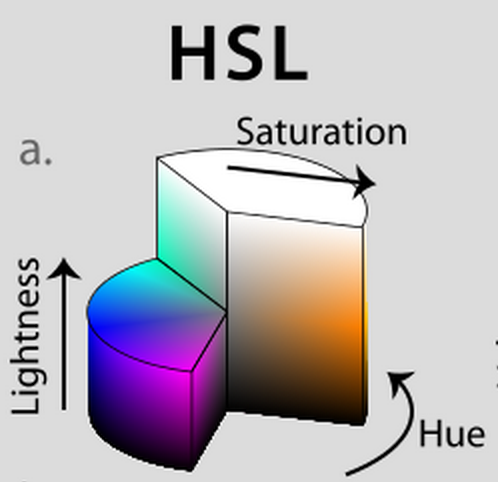

ThoughtWorks®
CSS3
Presented byXie Jia
- Box Model
- Backgrounds and Borders
- Text Effects
- 2D/3D Transformations
- Animations
- Multiple Column Layout
Box Model
Border
border radius allow you add rounded corner
This box has a border image
Background
This box has two background images.
This box has a background image which size is contain.
This box has a background image which size is cover.
This is a box with background clip border-box;
This is a box with background clip padding-box;
This is a box with background clip content-box;
shadow
This box has a white shadow
This text has shadow
rgba
```css
background-color: rgba(255, 255, 255, 0.3);
```

hsla
```css
background-color: hsla(120, 50%, 50%, .8);
```

linear-gradient
```css
background: -webkit-linear-gradient(left, red , blue); /* For Safari 5.1 to 6.0 */
background: -o-linear-gradient(right, red, blue); /* For Opera 11.1 to 12.0 */
background: -moz-linear-gradient(right, red, blue); /* For Firefox 3.6 to 15 */
background: linear-gradient(to right, red , blue); /* Standard syntax */
```
linear-gradient
```css
background: -webkit-linear-gradient(red 10%, green 85%, blue 90%); /* For Safari 5.1 to 6.0 */
background: -o-linear-gradient(red 10%, green 85%, blue 90%); /* For Opera 11.1 to 12.0 */
background: -moz-linear-gradient(red 10%, green 85%, blue 90%); /* For Firefox 3.6 to 15 */
background: linear-gradient(red 10%, green 85%, blue 90%); /* Standard syntax (must be last) *
```
radial-gradient
```css
background: -webkit-radial-gradient(circle, red, yellow, green); /* Safari */
background: -o-radial-gradient(circle, red, yellow, green); /* Opera 11.6 to 12.0 */
background: -moz-radial-gradient(circle, red, yellow, green); /* Firefox 3.6 to 15 */
background: radial-gradient(circle, red, yellow, green); /* Standard syntax */
```
radial-gradient
```css
background: -webkit-repeating-radial-gradient(red, yellow 10%, green 15%); /* For Safari 5.1 to 6.0 */
background: -o-repeating-radial-gradient(red, yellow 10%, green 15%); /* For Opera 11.6 to 12.0 */
background: -moz-repeating-radial-gradient(red, yellow 10%, green 15%); /* For Firefox 3.6 to 15 */
background: repeating-radial-gradient(red, yellow 10%, green 15%); /* Standard syntax (must be last) */
```
word-wrap
```css
word-wrap: break-word;
```

2D & 3D transform
- translate()
- rotate()
- scale()
- rotateX()
- rotateY()
Example
transition
Example
@keyframes
Example
Thank you
jiaxie@thoughtworks.com